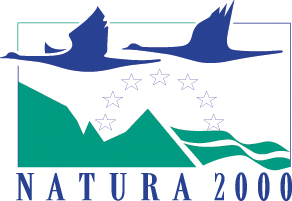

Il progetto europeo per migliorare lo stato di conservazione del fratino (Anarhynchus alexandrinus), uccello simbolo delle spiagge e oggi in forte declino. Coinvolge enti pubblici, università, associazioni e istituzioni in Italia e Croazia.


LIFE Alexandro
Dal campo

Presentazione WEB APP Alexandro
Il giorno 19 novembre 2026 alle ore 9:30 presso il Granaio Lorenese ad Alberese (GR), nel Parco Regionale della Maremma, sarà…

LIFE Alexandro a Punta Faro
Il giorno 7/10/2026 è stato effettuato un sopralluogo congiunto IEA-UNIPI-LIPU nel sito di progetto di Punta Faro, a Lignano…

Primo webinar di formazione per volontari in Croazia
Il 9 giugno 2026 si è svolto in modalità da remoto il primo corso di formazione per i volontari che saranno impegnati nel…
WebApp Alexandro
Il futuro del fratino è (anche) nelle tue mani
Riconosci il fratino, rispetta i suoi spazi e segnala le osservazioni direttamente dal telefono.

Beneficiari